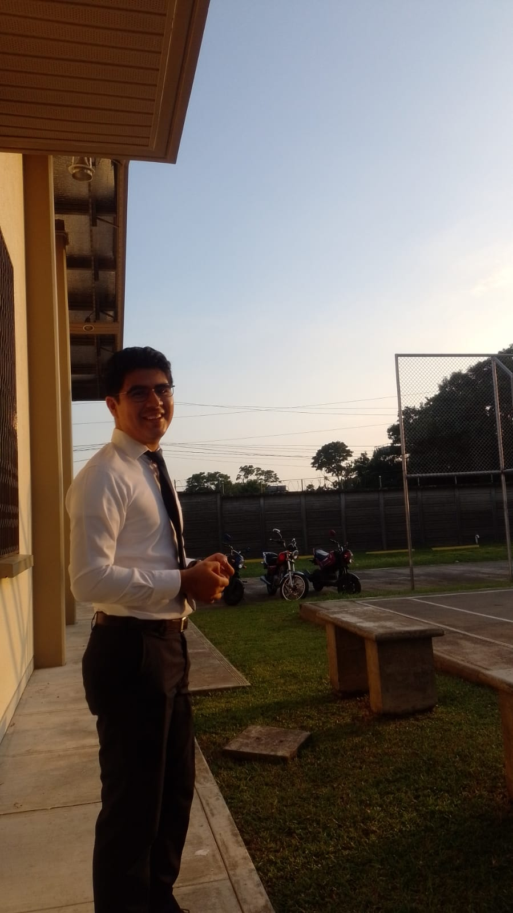

Carlos Fernando Limatu Maldonado | WDD130
Hello everyone, my name is Carlos Fernando Limatu Maldonado. I'm from a beautiful place named Retalhuleu a city of Guatemala. I'm a math teacher and I love to share with others the things I've learned not only about math however the spiritual things. Thanks for your attention and I wish you the best.